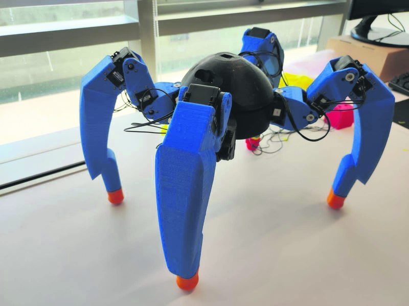

Locomoción de un robot cuadrúpedo con aprendizaje por refuerzo
Como ayudante de investigación en la UTFSM, evalué en simulación el movimiento de un robot cuadrúpedo entrenado con aprendizaje por refuerzo profundo y entregué retroalimentación para mejorar cada generación del algoritmo. Los ajustes optimizados se cargaron en el robot real.
Linux, simulación, aprendizaje por refuerzo
Ver detalle
Mi responsabilidad incluía analizar en detalle el movimiento del robot y dar retroalimentación técnica para mejorar su desempeño en generaciones futuras.
Usé herramientas de Linux y entornos de simulación especializados para ejecutar pruebas, ajustar parámetros y cargar las configuraciones optimizadas en el robot real. El trabajo reforzó mis conocimientos en aprendizaje por refuerzo, robótica autónoma y procesamiento de datos en tiempo real.